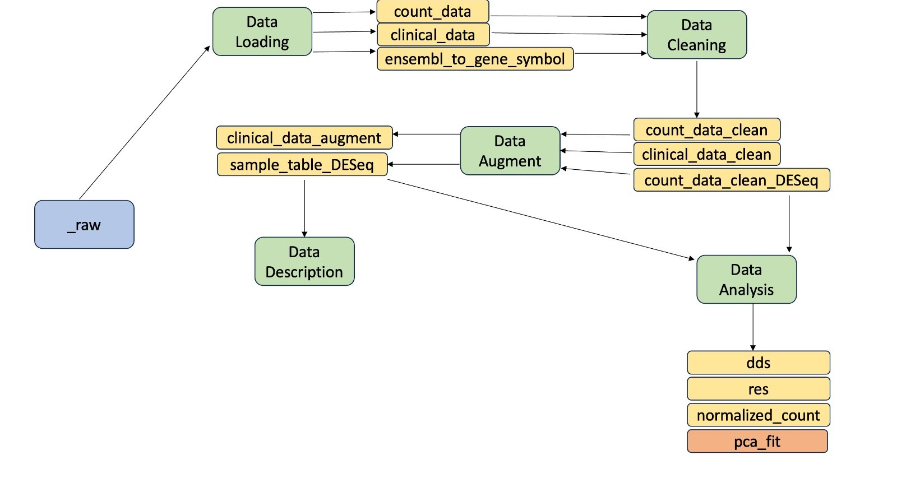
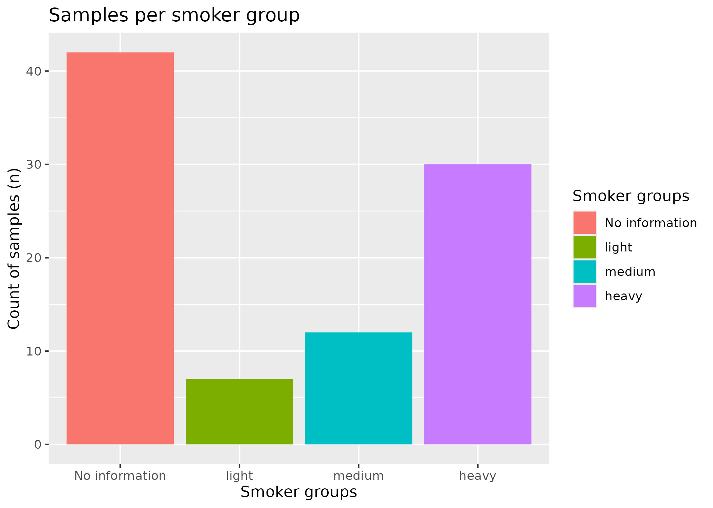
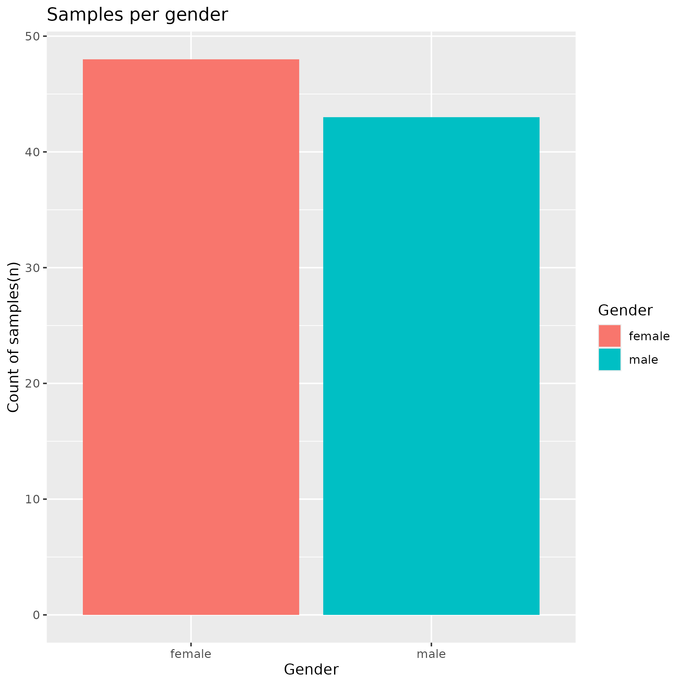
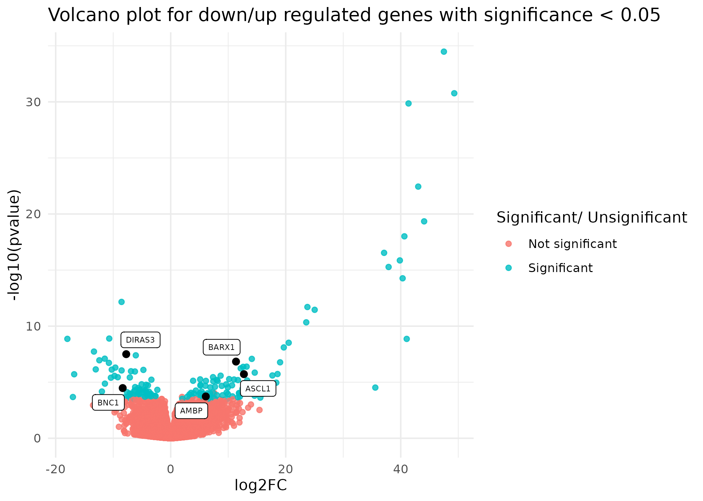

Exploration and differential gene-expression analysis of TCGA - LUAD samples - Group 15
Introduction
Lung adenocarcinoma is the primary cause of cancer-related death worldwide
Smoking accounts for 80-90 % of the lung cancer cases
Our aim is to analyse differential gene expression between heavy, medium and light smokers to understand the impact of varying smoking intensities on lung adenocarcinoma samples.
Tonya Walser, Xiaoyan Cui, Jane Yanagawa, Jay M. Lee, Eileen Heinrich, Gina Lee, Sherven Sharma, and Steven M. Dubinett. Smoking and Lung Cancer. Proceedings of the American Thoracic Society, 5(8):811–815, December 2008. ISSN 1546-3222. doi: 10.1513/pats.200809-100TH
Materials
Clinical Data
| sample | id | disease_type | case_id | submitter_id | primary_site | cigarettes_per_day.exposures | alcohol_history.exposures | years_smoked.exposures | pack_years_smoked.exposures | race.demographic | gender.demographic | ethnicity.demographic | vital_status.demographic | age_at_index.demographic | days_to_birth.demographic | year_of_birth.demographic | year_of_death.demographic | primary_site.project | project_id.project | disease_type.project | name.project | name.program.project | tissue_source_site_id.tissue_source_site | code.tissue_source_site | name.tissue_source_site | project.tissue_source_site | bcr_id.tissue_source_site | days_to_death.demographic | entity_submitter_id.annotations | notes.annotations | submitter_id.annotations | classification.annotations | entity_id.annotations | created_datetime.annotations | annotation_id.annotations | entity_type.annotations | updated_datetime.annotations | case_id.annotations | state.annotations | category.annotations | status.annotations | case_submitter_id.annotations | synchronous_malignancy.diagnoses | ajcc_pathologic_stage.diagnoses | days_to_diagnosis.diagnoses | last_known_disease_status.diagnoses | tissue_or_organ_of_origin.diagnoses | days_to_last_follow_up.diagnoses | age_at_diagnosis.diagnoses | primary_diagnosis.diagnoses | prior_malignancy.diagnoses | year_of_diagnosis.diagnoses | prior_treatment.diagnoses | ajcc_staging_system_edition.diagnoses | ajcc_pathologic_t.diagnoses | morphology.diagnoses | ajcc_pathologic_n.diagnoses | ajcc_pathologic_m.diagnoses | classification_of_tumor.diagnoses | icd_10_code.diagnoses | site_of_resection_or_biopsy.diagnoses | tumor_grade.diagnoses | progression_or_recurrence.diagnoses | age_at_earliest_diagnosis.diagnoses.xena_derived | age_at_earliest_diagnosis_in_years.diagnoses.xena_derived | treatment_id.treatments.diagnoses | submitter_id.treatments.diagnoses | treatment_type.treatments.diagnoses | treatment_or_therapy.treatments.diagnoses | created_datetime.treatments.diagnoses | updated_datetime.treatments.diagnoses | state.treatments.diagnoses | sample_type_id.samples | tumor_descriptor.samples | sample_id.samples | sample_type.samples | composition.samples | days_to_collection.samples | initial_weight.samples | preservation_method.samples | intermediate_dimension.samples | pathology_report_uuid.samples | shortest_dimension.samples | oct_embedded.samples | specimen_type.samples | longest_dimension.samples | is_ffpe.samples | tissue_type.samples |
|---|---|---|---|---|---|---|---|---|---|---|---|---|---|---|---|---|---|---|---|---|---|---|---|---|---|---|---|---|---|---|---|---|---|---|---|---|---|---|---|---|---|---|---|---|---|---|---|---|---|---|---|---|---|---|---|---|---|---|---|---|---|---|---|---|---|---|---|---|---|---|---|---|---|---|---|---|---|---|---|---|---|---|---|---|---|---|---|---|
| TCGA-55-A48X-01A | 32d9935a-f5cd-43b3-88bd-09e6e2b9090d | Adenomas and Adenocarcinomas | 32d9935a-f5cd-43b3-88bd-09e6e2b9090d | TCGA-55-A48X | Bronchus and lung | 1.9726027 | Not Reported | 36 | 36 | white | female | not hispanic or latino | Alive | 63 | -23341 | 1949 | NA | Bronchus and lung | TCGA-LUAD | [‘Cystic, Mucinous and Serous Neoplasms’, ‘Adenomas and Adenocarcinomas’, ‘Acinar Cell Neoplasms’] | Lung Adenocarcinoma | TCGA | 0dccbfb8-2c53-5716-8631-109ce36081d4 | 55 | International Genomics Consortium | Lung adenocarcinoma | IGC | NA | NA | NA | NA | NA | NA | NA | NA | NA | NA | NA | NA | NA | NA | NA | No | Stage IIA | 0 | not reported | Lower lobe, lung | 689 | 23341 | Adenocarcinoma, NOS | yes | 2012 | No | 7th | T1b | 8140/3 | N1 | M0 | not reported | C34.3 | Lower lobe, lung | Not Reported | not reported | 23341 | 63.94795 | [‘d64775f4-012b-5dd4-ab83-14faa6f08dee’, ‘f4f5773c-c84a-5424-9f37-be733d29a815’] | [‘TCGA-55-A48X_treatment_1’, ‘TCGA-55-A48X_treatment’] | [‘Pharmaceutical Therapy, NOS’, ‘Radiation Therapy, NOS’] | [‘yes’, ‘no’] | [‘2019-04-28T12:54:29.887722-05:00’, ’’] | [‘2019-07-31T20:30:49.413225-05:00’, ‘2019-07-31T20:30:49.413225-05:00’] | [‘released’, ‘released’] | 01 | Primary | 9602a00c-a48d-455e-ab57-0e61414098fe | Primary Tumor | Not Reported | 111 | 30 | Unknown | NA | 4D06D10F-60F5-4417-BD8E-F2BBCA84BEEB | NA | FALSE | Solid Tissue | NA | FALSE | Tumor |
| TCGA-NJ-A55R-01A | 7c7d777b-bf00-4c24-97fc-922580d5605f | Adenomas and Adenocarcinomas | 7c7d777b-bf00-4c24-97fc-922580d5605f | TCGA-NJ-A55R | Bronchus and lung | 0.2739726 | Not Reported | NA | 5 | white | male | not hispanic or latino | Alive | 67 | -24738 | 1944 | NA | Bronchus and lung | TCGA-LUAD | [‘Cystic, Mucinous and Serous Neoplasms’, ‘Adenomas and Adenocarcinomas’, ‘Acinar Cell Neoplasms’] | Lung Adenocarcinoma | TCGA | 2a585ec3-fd72-5671-9b61-268fc28bdad6 | NJ | Washington University - Rush University | Lung adenocarcinoma | NCH | NA | NA | NA | NA | NA | NA | NA | NA | NA | NA | NA | NA | NA | NA | NA | No | Stage IA | 0 | not reported | Upper lobe, lung | 603 | 24738 | Solid carcinoma, NOS | no | 2011 | No | 7th | T1b | 8230/3 | N0 | MX | not reported | C34.1 | Upper lobe, lung | Not Reported | not reported | 24738 | 67.77534 | [‘0a9cd21d-461a-5661-912e-875b0c86bc9e’, ‘5e6c9810-6fc5-58d8-b32c-c780f124ab07’] | [‘TCGA-NJ-A55R_treatment_1’, ‘TCGA-NJ-A55R_treatment’] | [‘Pharmaceutical Therapy, NOS’, ‘Radiation Therapy, NOS’] | [‘no’, ‘no’] | [‘2019-04-28T09:01:41.488138-05:00’, ’’] | [‘2019-07-31T15:44:54.627344-05:00’, ‘2019-07-31T15:44:54.627344-05:00’] | [‘released’, ‘released’] | 01 | Primary | d00051b0-6181-47be-91c4-79d9530d18a5 | Primary Tumor | Not Reported | 499 | 200 | OCT | NA | 726A5F6E-4592-49AA-976F-556CABABDD3D | NA | TRUE | Solid Tissue | NA | FALSE | Tumor |
| TCGA-53-A4EZ-01A | 7ca711ec-9ac0-4fa7-8a60-32ae84b8789a | Acinar Cell Neoplasms | 7ca711ec-9ac0-4fa7-8a60-32ae84b8789a | TCGA-53-A4EZ | Bronchus and lung | 2.1917808 | Not Reported | 40 | 40 | white | male | hispanic or latino | Alive | 63 | -23201 | 1949 | NA | Bronchus and lung | TCGA-LUAD | [‘Cystic, Mucinous and Serous Neoplasms’, ‘Adenomas and Adenocarcinomas’, ‘Acinar Cell Neoplasms’] | Lung Adenocarcinoma | TCGA | e70790dd-c60e-5068-bc14-c11acce48fdb | 53 | University of Miami | Lung adenocarcinoma | IGC | NA | NA | NA | NA | NA | NA | NA | NA | NA | NA | NA | NA | NA | NA | NA | No | Stage IIA | 0 | not reported | Upper lobe, lung | 1071 | 23201 | Acinar cell carcinoma | no | 2012 | No | 7th | T2a | 8550/3 | N1 | MX | not reported | C34.1 | Upper lobe, lung | Not Reported | not reported | 23201 | 63.56438 | [‘2ed7aef8-9d9a-51dd-a6bf-ce72e058378c’, ‘516e437b-9838-5c7b-9330-7c05f62c3dea’] | [‘TCGA-53-A4EZ_treatment’, ‘TCGA-53-A4EZ_treatment_1’] | [‘Radiation Therapy, NOS’, ‘Pharmaceutical Therapy, NOS’] | [‘yes’, ‘yes’] | [’‘, ’2019-04-28T12:53:52.664595-05:00’] | [‘2019-07-31T20:30:03.747341-05:00’, ‘2019-07-31T20:30:03.747341-05:00’] | [‘released’, ‘released’] | 01 | Primary | 07af724b-7a04-47b8-b282-662710a1c347 | Primary Tumor | Not Reported | 163 | 120 | OCT | NA | E4CB6C1D-9774-47BE-989E-F9CD05D9EED8 | NA | TRUE | Solid Tissue | NA | FALSE | Tumor |
| TCGA-44-6777-01A | 349e6f38-2c67-4a69-a777-b9173a2a27cf | Adenomas and Adenocarcinomas | 349e6f38-2c67-4a69-a777-b9173a2a27cf | TCGA-44-6777 | Bronchus and lung | 3.5068493 | Not Reported | 64 | 64 | white | female | not reported | Dead | 85 | -31234 | 1921 | 2008 | Bronchus and lung | TCGA-LUAD | [‘Cystic, Mucinous and Serous Neoplasms’, ‘Adenomas and Adenocarcinomas’, ‘Acinar Cell Neoplasms’] | Lung Adenocarcinoma | TCGA | 8a2f99e1-2b8a-51d6-a834-0aec29d3e323 | 44 | Christiana Healthcare | Lung adenocarcinoma | IGC | 987 | NA | NA | NA | NA | NA | NA | NA | NA | NA | NA | NA | NA | NA | NA | No | Stage IB | 0 | not reported | Upper lobe, lung | NA | 31234 | Adenocarcinoma, NOS | no | 2006 | No | 6th | T2 | 8140/3 | NX | MX | not reported | C34.1 | Upper lobe, lung | Not Reported | not reported | 31234 | 85.57260 | [‘d55cde2d-062f-5c82-b5d1-81ac644fc120’, ‘fa8c680d-c4bb-5164-9063-429f9c6b71d7’] | [‘TCGA-44-6777_treatment’, ‘TCGA-44-6777_treatment_1’] | [‘Radiation Therapy, NOS’, ‘Pharmaceutical Therapy, NOS’] | [‘yes’, ‘no’] | [’‘, ’2019-04-28T12:37:31.626229-05:00’] | [‘2019-07-31T20:10:35.707922-05:00’, ‘2019-07-31T20:10:35.707922-05:00’] | [‘released’, ‘released’] | 01 | Primary | 174e4405-4848-4e5e-93cc-0cdf2795c91a | Primary Tumor | Not Reported | NA | NA | Unknown | 1.0 | 600a1078-21f2-4267-9d3c-03f292fa6a32 | 0.4 | NA | Solid Tissue | 1.8 | FALSE | Tumor |
| TCGA-44-6777-11A | 349e6f38-2c67-4a69-a777-b9173a2a27cf | Adenomas and Adenocarcinomas | 349e6f38-2c67-4a69-a777-b9173a2a27cf | TCGA-44-6777 | Bronchus and lung | 3.5068493 | Not Reported | 64 | 64 | white | female | not reported | Dead | 85 | -31234 | 1921 | 2008 | Bronchus and lung | TCGA-LUAD | [‘Cystic, Mucinous and Serous Neoplasms’, ‘Adenomas and Adenocarcinomas’, ‘Acinar Cell Neoplasms’] | Lung Adenocarcinoma | TCGA | 8a2f99e1-2b8a-51d6-a834-0aec29d3e323 | 44 | Christiana Healthcare | Lung adenocarcinoma | IGC | 987 | NA | NA | NA | NA | NA | NA | NA | NA | NA | NA | NA | NA | NA | NA | No | Stage IB | 0 | not reported | Upper lobe, lung | NA | 31234 | Adenocarcinoma, NOS | no | 2006 | No | 6th | T2 | 8140/3 | NX | MX | not reported | C34.1 | Upper lobe, lung | Not Reported | not reported | 31234 | 85.57260 | [‘d55cde2d-062f-5c82-b5d1-81ac644fc120’, ‘fa8c680d-c4bb-5164-9063-429f9c6b71d7’] | [‘TCGA-44-6777_treatment’, ‘TCGA-44-6777_treatment_1’] | [‘Radiation Therapy, NOS’, ‘Pharmaceutical Therapy, NOS’] | [‘yes’, ‘no’] | [’‘, ’2019-04-28T12:37:31.626229-05:00’] | [‘2019-07-31T20:10:35.707922-05:00’, ‘2019-07-31T20:10:35.707922-05:00’] | [‘released’, ‘released’] | 11 | Not Applicable | 5f42537f-8c2a-48b6-8d9c-1f409711d128 | Solid Tissue Normal | Not Reported | NA | NA | Unknown | 0.6 | NA | 0.4 | NA | Solid Tissue | 1.0 | FALSE | Normal |
| TCGA-55-6982-01A | 35cb7841-9b09-465a-90c5-e3b8a9faad49 | Adenomas and Adenocarcinomas | 35cb7841-9b09-465a-90c5-e3b8a9faad49 | TCGA-55-6982 | Bronchus and lung | NA | Not Reported | NA | NA | white | female | not reported | Dead | 79 | NA | 1925 | 2006 | Bronchus and lung | TCGA-LUAD | [‘Cystic, Mucinous and Serous Neoplasms’, ‘Adenomas and Adenocarcinomas’, ‘Acinar Cell Neoplasms’] | Lung Adenocarcinoma | TCGA | 0dccbfb8-2c53-5716-8631-109ce36081d4 | 55 | International Genomics Consortium | Lung adenocarcinoma | IGC | 995 | NA | NA | NA | NA | NA | NA | NA | NA | NA | NA | NA | NA | NA | NA | No | Stage IIB | 0 | not reported | Lower lobe, lung | NA | NA | Adenocarcinoma, NOS | no | 2004 | No | 6th | T2 | 8140/3 | N1 | M0 | not reported | C34.3 | Lower lobe, lung | Not Reported | not reported | NA | NA | [‘a243f05f-4bf6-527d-85ad-490725b3d104’, ‘e1329d9a-9160-586c-a231-51d4de73af02’] | [‘TCGA-55-6982_treatment_1’, ‘TCGA-55-6982_treatment’] | [‘Pharmaceutical Therapy, NOS’, ‘Radiation Therapy, NOS’] | [‘yes’, ‘yes’] | [‘2019-04-28T12:37:36.592233-05:00’, ’’] | [‘2019-07-31T20:10:41.817259-05:00’, ‘2019-07-31T20:10:41.817259-05:00’] | [‘released’, ‘released’] | 01 | Primary | 3b284fc6-7dc4-46c2-8ec9-1121ef0b4308 | Primary Tumor | Not Reported | NA | NA | Unknown | 0.3 | 54e65072-9bea-41d0-b976-5f5723379c51 | 0.1 | NA | Solid Tissue | 0.5 | FALSE | Tumor |
| TCGA-55-6982-11A | 35cb7841-9b09-465a-90c5-e3b8a9faad49 | Adenomas and Adenocarcinomas | 35cb7841-9b09-465a-90c5-e3b8a9faad49 | TCGA-55-6982 | Bronchus and lung | NA | Not Reported | NA | NA | white | female | not reported | Dead | 79 | NA | 1925 | 2006 | Bronchus and lung | TCGA-LUAD | [‘Cystic, Mucinous and Serous Neoplasms’, ‘Adenomas and Adenocarcinomas’, ‘Acinar Cell Neoplasms’] | Lung Adenocarcinoma | TCGA | 0dccbfb8-2c53-5716-8631-109ce36081d4 | 55 | International Genomics Consortium | Lung adenocarcinoma | IGC | 995 | NA | NA | NA | NA | NA | NA | NA | NA | NA | NA | NA | NA | NA | NA | No | Stage IIB | 0 | not reported | Lower lobe, lung | NA | NA | Adenocarcinoma, NOS | no | 2004 | No | 6th | T2 | 8140/3 | N1 | M0 | not reported | C34.3 | Lower lobe, lung | Not Reported | not reported | NA | NA | [‘a243f05f-4bf6-527d-85ad-490725b3d104’, ‘e1329d9a-9160-586c-a231-51d4de73af02’] | [‘TCGA-55-6982_treatment_1’, ‘TCGA-55-6982_treatment’] | [‘Pharmaceutical Therapy, NOS’, ‘Radiation Therapy, NOS’] | [‘yes’, ‘yes’] | [‘2019-04-28T12:37:36.592233-05:00’, ’’] | [‘2019-07-31T20:10:41.817259-05:00’, ‘2019-07-31T20:10:41.817259-05:00’] | [‘released’, ‘released’] | 11 | Not Applicable | ffb185aa-75ac-4696-936b-52f35a345a2d | Solid Tissue Normal | Not Reported | NA | NA | Unknown | 0.7 | NA | 0.5 | NA | Solid Tissue | 0.8 | FALSE | Normal |
| TCGA-50-7109-01A | 7eb540b4-8dd3-4382-a488-e48b1c7213b3 | Adenomas and Adenocarcinomas | 7eb540b4-8dd3-4382-a488-e48b1c7213b3 | TCGA-50-7109 | Bronchus and lung | 6.5753425 | Not Reported | NA | 120 | white | male | not hispanic or latino | Dead | 60 | -21979 | 1951 | NA | Bronchus and lung | TCGA-LUAD | [‘Cystic, Mucinous and Serous Neoplasms’, ‘Adenomas and Adenocarcinomas’, ‘Acinar Cell Neoplasms’] | Lung Adenocarcinoma | TCGA | 15f57922-7253-504f-8f71-7eb609d51fe0 | 50 | University of Pittsburgh | Lung adenocarcinoma | IGC | 308 | NA | NA | NA | NA | NA | NA | NA | NA | NA | NA | NA | NA | NA | NA | No | Stage IA | 0 | not reported | Lower lobe, lung | 255 | 21979 | Adenocarcinoma, NOS | no | 2011 | No | 7th | T1 | 8140/3 | N0 | M0 | not reported | C34.3 | Lower lobe, lung | Not Reported | not reported | 21979 | 60.21644 | [‘42f10a74-02ae-5cfc-916c-b6b9b3d040a9’, ‘9286fee7-514d-50b0-9f2b-87747151d585’] | [‘TCGA-50-7109_treatment’, ‘TCGA-50-7109_treatment_1’] | [‘Radiation Therapy, NOS’, ‘Pharmaceutical Therapy, NOS’] | [‘no’, ‘no’] | [’‘, ’2019-04-28T12:55:34.462933-05:00’] | [‘2019-07-31T20:32:06.623801-05:00’, ‘2019-07-31T20:32:06.623801-05:00’] | [‘released’, ‘released’] | 01 | Primary | 763310b9-3fb9-4a22-851c-e4335a2ed21c | Primary Tumor | Not Reported | NA | NA | Unknown | 0.9 | a34c2391-f021-4b46-a4e9-8d9b7ee31402 | 0.2 | NA | Solid Tissue | 1.3 | FALSE | Tumor |
| TCGA-50-7109-11A | 7eb540b4-8dd3-4382-a488-e48b1c7213b3 | Adenomas and Adenocarcinomas | 7eb540b4-8dd3-4382-a488-e48b1c7213b3 | TCGA-50-7109 | Bronchus and lung | 6.5753425 | Not Reported | NA | 120 | white | male | not hispanic or latino | Dead | 60 | -21979 | 1951 | NA | Bronchus and lung | TCGA-LUAD | [‘Cystic, Mucinous and Serous Neoplasms’, ‘Adenomas and Adenocarcinomas’, ‘Acinar Cell Neoplasms’] | Lung Adenocarcinoma | TCGA | 15f57922-7253-504f-8f71-7eb609d51fe0 | 50 | University of Pittsburgh | Lung adenocarcinoma | IGC | 308 | NA | NA | NA | NA | NA | NA | NA | NA | NA | NA | NA | NA | NA | NA | No | Stage IA | 0 | not reported | Lower lobe, lung | 255 | 21979 | Adenocarcinoma, NOS | no | 2011 | No | 7th | T1 | 8140/3 | N0 | M0 | not reported | C34.3 | Lower lobe, lung | Not Reported | not reported | 21979 | 60.21644 | [‘42f10a74-02ae-5cfc-916c-b6b9b3d040a9’, ‘9286fee7-514d-50b0-9f2b-87747151d585’] | [‘TCGA-50-7109_treatment’, ‘TCGA-50-7109_treatment_1’] | [‘Radiation Therapy, NOS’, ‘Pharmaceutical Therapy, NOS’] | [‘no’, ‘no’] | [’‘, ’2019-04-28T12:55:34.462933-05:00’] | [‘2019-07-31T20:32:06.623801-05:00’, ‘2019-07-31T20:32:06.623801-05:00’] | [‘released’, ‘released’] | 11 | Not Applicable | db5e9074-741d-495c-b0b6-61f51089c4d2 | Solid Tissue Normal | Not Reported | NA | NA | Unknown | 1.0 | NA | 0.2 | NA | Solid Tissue | 1.0 | FALSE | Normal |
| TCGA-NJ-A4YG-01A | 7fd03220-531e-4ef8-beca-e9703e8c0ae1 | Adenomas and Adenocarcinomas | 7fd03220-531e-4ef8-beca-e9703e8c0ae1 | TCGA-NJ-A4YG | Bronchus and lung | 5.6986301 | Not Reported | 52 | 104 | white | male | not reported | Alive | 65 | -23812 | 1943 | NA | Bronchus and lung | TCGA-LUAD | [‘Cystic, Mucinous and Serous Neoplasms’, ‘Adenomas and Adenocarcinomas’, ‘Acinar Cell Neoplasms’] | Lung Adenocarcinoma | TCGA | 2a585ec3-fd72-5671-9b61-268fc28bdad6 | NJ | Washington University - Rush University | Lung adenocarcinoma | NCH | NA | NA | NA | NA | NA | NA | NA | NA | NA | NA | NA | NA | NA | NA | NA | No | Stage IB | 0 | not reported | Upper lobe, lung | 2261 | 23812 | Adenocarcinoma with mixed subtypes | no | 2008 | No | 6th | T2 | 8255/3 | N0 | M0 | not reported | C34.1 | Upper lobe, lung | Not Reported | not reported | 23812 | 65.23836 | [‘360a6efe-e7b2-572a-9991-88a87dd5dcdd’, ‘e52a2607-6b84-56a8-a8a6-9cfa1401375f’] | [‘TCGA-NJ-A4YG_treatment_1’, ‘TCGA-NJ-A4YG_treatment’] | [‘Pharmaceutical Therapy, NOS’, ‘Radiation Therapy, NOS’] | [‘no’, ‘no’] | [‘2019-04-28T09:04:07.390676-05:00’, ’’] | [‘2019-07-31T15:47:58.149124-05:00’, ‘2019-07-31T15:47:58.149124-05:00’] | [‘released’, ‘released’] | 01 | Primary | 337b38b7-752e-4246-aba2-163140b1e3c7 | Primary Tumor | Not Reported | 1691 | 280 | OCT | NA | 6A90E23E-9E8F-4282-837C-120E3AE994D7 | NA | TRUE | Solid Tissue | NA | FALSE | Tumor |
| TCGA-55-8302-01A | 807cc7d2-6e3b-4f2d-9531-0da994eeeada | Adenomas and Adenocarcinomas | 807cc7d2-6e3b-4f2d-9531-0da994eeeada | TCGA-55-8302 | Bronchus and lung | 3.2328767 | Not Reported | NA | 59 | white | male | not reported | Alive | 54 | -20011 | 1958 | NA | Bronchus and lung | TCGA-LUAD | [‘Cystic, Mucinous and Serous Neoplasms’, ‘Adenomas and Adenocarcinomas’, ‘Acinar Cell Neoplasms’] | Lung Adenocarcinoma | TCGA | 0dccbfb8-2c53-5716-8631-109ce36081d4 | 55 | International Genomics Consortium | Lung adenocarcinoma | IGC | NA | NA | NA | NA | NA | NA | NA | NA | NA | NA | NA | NA | NA | NA | NA | No | Stage IB | 0 | not reported | Lower lobe, lung | 478 | 20011 | Adenocarcinoma, NOS | no | 2012 | No | 7th | T2 | 8140/3 | N0 | MX | not reported | C34.3 | Lower lobe, lung | Not Reported | not reported | 20011 | 54.82466 | [‘90b69086-49c2-54bb-a7af-f161300216fd’, ‘f35f643d-66de-529d-9d6b-fa7ad21a8295’] | [‘TCGA-55-8302_treatment_1’, ‘TCGA-55-8302_treatment’] | [‘Pharmaceutical Therapy, NOS’, ‘Radiation Therapy, NOS’] | [‘no’, ‘no’] | [‘2019-04-28T12:55:41.789688-05:00’, ’’] | [‘2019-07-31T20:32:15.635980-05:00’, ‘2019-07-31T20:32:15.635980-05:00’] | [‘released’, ‘released’] | 01 | Primary | 97df724f-afe1-4db4-9563-853245093fbb | Primary Tumor | Not Reported | NA | NA | Unknown | 0.3 | aa106e5a-b9b9-4f54-b902-120e8a3eb689 | 0.2 | NA | Solid Tissue | 0.3 | FALSE | Tumor |
| TCGA-50-6595-11A | 82476d2d-e403-4f6b-8dd6-cc84e3329478 | Adenomas and Adenocarcinomas | 82476d2d-e403-4f6b-8dd6-cc84e3329478 | TCGA-50-6595 | Bronchus and lung | NA | Not Reported | NA | NA | white | female | not hispanic or latino | Dead | 74 | -27197 | 1935 | 2009 | Bronchus and lung | TCGA-LUAD | [‘Cystic, Mucinous and Serous Neoplasms’, ‘Adenomas and Adenocarcinomas’, ‘Acinar Cell Neoplasms’] | Lung Adenocarcinoma | TCGA | 15f57922-7253-504f-8f71-7eb609d51fe0 | 50 | University of Pittsburgh | Lung adenocarcinoma | IGC | 189 | NA | NA | NA | NA | NA | NA | NA | NA | NA | NA | NA | NA | NA | NA | No | Stage IIIA | 0 | not reported | Upper lobe, lung | NA | 27197 | Adenocarcinoma, NOS | no | 2009 | No | 6th | T2 | 8140/3 | N2 | M0 | not reported | C34.1 | Upper lobe, lung | Not Reported | not reported | 27197 | 74.51233 | [‘52c92075-612d-56dc-ae77-83f16fbd89a4’, ‘c1b2470d-8275-50b2-ac4b-2d2ae52f1ce6’] | [‘TCGA-50-6595_treatment’, ‘TCGA-50-6595_treatment_1’] | [‘Radiation Therapy, NOS’, ‘Pharmaceutical Therapy, NOS’] | [‘yes’, ‘yes’] | [’‘, ’2019-04-28T12:55:49.288453-05:00’] | [‘2019-07-31T20:32:24.550909-05:00’, ‘2019-07-31T20:32:24.550909-05:00’] | [‘released’, ‘released’] | 11 | Not Applicable | 572aec4a-6aa4-4528-b994-885415e7eea2 | Solid Tissue Normal | Not Reported | NA | NA | Unknown | 1.1 | NA | 0.1 | NA | Solid Tissue | 1.7 | FALSE | Normal |
| TCGA-50-6595-01A | 82476d2d-e403-4f6b-8dd6-cc84e3329478 | Adenomas and Adenocarcinomas | 82476d2d-e403-4f6b-8dd6-cc84e3329478 | TCGA-50-6595 | Bronchus and lung | NA | Not Reported | NA | NA | white | female | not hispanic or latino | Dead | 74 | -27197 | 1935 | 2009 | Bronchus and lung | TCGA-LUAD | [‘Cystic, Mucinous and Serous Neoplasms’, ‘Adenomas and Adenocarcinomas’, ‘Acinar Cell Neoplasms’] | Lung Adenocarcinoma | TCGA | 15f57922-7253-504f-8f71-7eb609d51fe0 | 50 | University of Pittsburgh | Lung adenocarcinoma | IGC | 189 | NA | NA | NA | NA | NA | NA | NA | NA | NA | NA | NA | NA | NA | NA | No | Stage IIIA | 0 | not reported | Upper lobe, lung | NA | 27197 | Adenocarcinoma, NOS | no | 2009 | No | 6th | T2 | 8140/3 | N2 | M0 | not reported | C34.1 | Upper lobe, lung | Not Reported | not reported | 27197 | 74.51233 | [‘52c92075-612d-56dc-ae77-83f16fbd89a4’, ‘c1b2470d-8275-50b2-ac4b-2d2ae52f1ce6’] | [‘TCGA-50-6595_treatment’, ‘TCGA-50-6595_treatment_1’] | [‘Radiation Therapy, NOS’, ‘Pharmaceutical Therapy, NOS’] | [‘yes’, ‘yes’] | [’‘, ’2019-04-28T12:55:49.288453-05:00’] | [‘2019-07-31T20:32:24.550909-05:00’, ‘2019-07-31T20:32:24.550909-05:00’] | [‘released’, ‘released’] | 01 | Primary | 9ed482d9-2aea-4200-a994-107a1e88f17b | Primary Tumor | Not Reported | NA | NA | Unknown | 0.8 | 13f36f42-a0d4-4cf3-b8ea-8cdeff292a91 | 0.3 | NA | Solid Tissue | 1.7 | FALSE | Tumor |
| TCGA-55-6968-11A | 83a6ed20-b3cf-48b9-8ed3-a080cd4951fa | Adenomas and Adenocarcinomas | 83a6ed20-b3cf-48b9-8ed3-a080cd4951fa | TCGA-55-6968 | Bronchus and lung | NA | Not Reported | NA | NA | white | male | not hispanic or latino | Dead | 61 | -22344 | 1943 | 2007 | Bronchus and lung | TCGA-LUAD | [‘Cystic, Mucinous and Serous Neoplasms’, ‘Adenomas and Adenocarcinomas’, ‘Acinar Cell Neoplasms’] | Lung Adenocarcinoma | TCGA | 0dccbfb8-2c53-5716-8631-109ce36081d4 | 55 | International Genomics Consortium | Lung adenocarcinoma | IGC | 1293 | NA | NA | NA | NA | NA | NA | NA | NA | NA | NA | NA | NA | NA | NA | No | Stage IV | 0 | not reported | Lower lobe, lung | NA | 22344 | Adenocarcinoma, NOS | no | 2004 | No | 6th | T1 | 8140/3 | N0 | M1 | not reported | C34.3 | Lower lobe, lung | Not Reported | not reported | 22344 | 61.21644 | [‘c27577e8-1407-5f87-891b-d15be42c8486’, ‘ee915171-f563-5816-b78d-b7838dd9c1f7’] | [‘TCGA-55-6968_treatment’, ‘TCGA-55-6968_treatment_1’] | [‘Radiation Therapy, NOS’, ‘Pharmaceutical Therapy, NOS’] | [‘yes’, ‘yes’] | [’‘, ’2019-04-28T12:55:51.401801-05:00’] | [‘2019-07-31T20:32:27.403762-05:00’, ‘2019-07-31T20:32:27.403762-05:00’] | [‘released’, ‘released’] | 11 | Not Applicable | affbf41b-ea28-406a-bdcb-146b9c053978 | Solid Tissue Normal | Not Reported | NA | NA | Unknown | 0.9 | NA | 0.3 | NA | Solid Tissue | 0.9 | FALSE | Normal |
| TCGA-55-6968-01A | 83a6ed20-b3cf-48b9-8ed3-a080cd4951fa | Adenomas and Adenocarcinomas | 83a6ed20-b3cf-48b9-8ed3-a080cd4951fa | TCGA-55-6968 | Bronchus and lung | NA | Not Reported | NA | NA | white | male | not hispanic or latino | Dead | 61 | -22344 | 1943 | 2007 | Bronchus and lung | TCGA-LUAD | [‘Cystic, Mucinous and Serous Neoplasms’, ‘Adenomas and Adenocarcinomas’, ‘Acinar Cell Neoplasms’] | Lung Adenocarcinoma | TCGA | 0dccbfb8-2c53-5716-8631-109ce36081d4 | 55 | International Genomics Consortium | Lung adenocarcinoma | IGC | 1293 | NA | NA | NA | NA | NA | NA | NA | NA | NA | NA | NA | NA | NA | NA | No | Stage IV | 0 | not reported | Lower lobe, lung | NA | 22344 | Adenocarcinoma, NOS | no | 2004 | No | 6th | T1 | 8140/3 | N0 | M1 | not reported | C34.3 | Lower lobe, lung | Not Reported | not reported | 22344 | 61.21644 | [‘c27577e8-1407-5f87-891b-d15be42c8486’, ‘ee915171-f563-5816-b78d-b7838dd9c1f7’] | [‘TCGA-55-6968_treatment’, ‘TCGA-55-6968_treatment_1’] | [‘Radiation Therapy, NOS’, ‘Pharmaceutical Therapy, NOS’] | [‘yes’, ‘yes’] | [’‘, ’2019-04-28T12:55:51.401801-05:00’] | [‘2019-07-31T20:32:27.403762-05:00’, ‘2019-07-31T20:32:27.403762-05:00’] | [‘released’, ‘released’] | 01 | Primary | df25f146-a833-4bfd-adf7-b41b6a7f797e | Primary Tumor | Not Reported | NA | NA | Unknown | 0.4 | 87f5cbe6-cce1-4a8c-8189-c6feabd3b4bb | 0.2 | NA | Solid Tissue | 0.7 | FALSE | Tumor |
Count Data
| Ensembl_ID | TCGA-38-7271-01A | TCGA-55-7914-01A | TCGA-95-7043-01A | TCGA-73-4658-01A | TCGA-86-8076-01A | TCGA-55-7726-01A | TCGA-44-6147-01A | TCGA-50-5932-01A | TCGA-44-2661-01A |
|---|---|---|---|---|---|---|---|---|---|
| ENSG00000000003.15 | 10.585901 | 11.520128 | 10.527477 | 11.837628 | 11.675075 | 10.215533 | 11.291746 | 12.150382 | 12.154502 |
| ENSG00000000005.6 | 0.000000 | 0.000000 | 0.000000 | 7.562242 | 0.000000 | 0.000000 | 2.000000 | 0.000000 | 0.000000 |
| ENSG00000000419.13 | 9.581201 | 10.499846 | 10.317413 | 9.939579 | 10.589651 | 10.611947 | 10.419434 | 10.605479 | 11.029287 |
| ENSG00000000457.14 | 8.997179 | 9.693487 | 8.546895 | 8.836050 | 10.194757 | 8.076816 | 9.857981 | 10.211888 | 10.002815 |
| ENSG00000000460.17 | 7.434628 | 7.918863 | 7.434628 | 7.312883 | 8.317413 | 7.781360 | 8.493855 | 8.335390 | 8.303781 |
| ENSG00000000938.13 | 9.832890 | 8.426265 | 6.357552 | 10.684749 | 10.903882 | 8.330917 | 9.690871 | 8.731319 | 10.782179 |
| ENSG00000000971.16 | 12.067098 | 10.440869 | 9.899357 | 11.986198 | 14.176641 | 12.201818 | 12.867761 | 11.528454 | 12.245850 |
| ENSG00000001036.14 | 10.100662 | 10.445015 | 10.735556 | 10.520619 | 11.618386 | 10.300353 | 9.899357 | 11.157347 | 11.431498 |
| ENSG00000001084.13 | 9.658212 | 7.826549 | 13.304209 | 9.672425 | 11.216140 | 10.471675 | 11.003869 | 10.415742 | 10.421013 |
| ENSG00000001167.14 | 10.027906 | 11.876133 | 9.946906 | 10.828930 | 10.961450 | 10.130571 | 10.772315 | 11.655978 | 10.641149 |
| ENSG00000001460.18 | 8.317413 | 8.527477 | 7.906891 | 8.665336 | 10.016808 | 8.184875 | 9.713387 | 8.791163 | 9.149747 |
| ENSG00000001461.17 | 10.347621 | 11.702173 | 9.754888 | 10.210671 | 11.868051 | 9.906891 | 11.310897 | 10.795228 | 11.597121 |
| ENSG00000001497.18 | 10.074141 | 11.089450 | 10.506803 | 10.800900 | 11.098032 | 10.505812 | 10.650154 | 11.237808 | 10.198445 |
| ENSG00000001561.7 | 10.311748 | 11.122828 | 10.129283 | 10.019591 | 11.103943 | 8.312883 | 12.106563 | 13.465949 | 11.981567 |
| ENSG00000001617.12 | 9.440869 | 9.958553 | 9.296916 | 10.538189 | 11.082814 | 10.144658 | 10.142107 | 10.909893 | 10.517669 |
Ensembl Data
| id | gene |
|---|---|
| ENSG00000223972.5 | DDX11L1 |
| ENSG00000227232.5 | WASH7P |
| ENSG00000278267.1 | MIR6859-1 |
| ENSG00000243485.5 | MIR1302-2HG |
| ENSG00000284332.1 | MIR1302-2 |
| ENSG00000237613.2 | FAM138A |
| ENSG00000268020.3 | OR4G4P |
| ENSG00000240361.2 | OR4G11P |
| ENSG00000186092.6 | OR4F5 |
| ENSG00000238009.6 | AL627309.1 |
| ENSG00000239945.1 | AL627309.3 |
| ENSG00000233750.3 | CICP27 |
| ENSG00000268903.1 | AL627309.6 |
| ENSG00000269981.1 | AL627309.7 |
| ENSG00000239906.1 | AL627309.2 |
Methods: Workflow
Methods: Sample description
- The data set comprises 53% females and 47% males, with an ethnicity distribution of 2% Asian, 8% Black or African, 1% Not Reported, and 89% White.
- The median of age is 68.


Methods: DESeq2
DESeq2 performs these following steps to identify whether a gene is differentially expressed or not. So for each gene, DESeq2 seek to estimate:
- Estimate size factor
- Estimates dispersions
- Fits a linear model: from these model we get some values on which a statistical test is applied and we get a p value. Based on the p value we can identify whether a gene is differentially expressed or not.
- Hypothesis testing
DESeq Results: Volcano Plot
Results: PCA Biplot

Discussion
- PCA Biplot shows that other biological variables, like gender, should’ve been accounted for in our DESeq analysis.